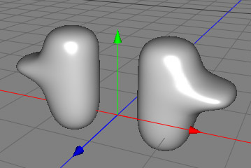

Modifier Objects
The Modifier Objects are a family of objects that don't have any geometry themselves. A little like the Creator objects, their purpose is to modify the geometry of an existing object. However, they differ from them in that you drop them inside a polygon object to make them work (instead of the other way around, like a creator object). The Modifier Object then calculates a new object out of the information offered by its parent object. If you drop more than one Modifier Object into object the modifiers will be processed one after another like on an assembly line. See the example below for a demonstration of how to use modifier objects effectively.
A key factor of modifier objects are that they are none destructive, meaning that you can delete them and the original geometry will be preserved.
UV Coords
Modifier objects always try to retain the UV coords of the parent object.
Tessellation
Because many modifier objects operate by moving the vertices of the parent polygon object, the results you get may not be as exactly desired, usually because some edges might have been stretched too far. This problem can be easily solved by increasing the tessellation of the object (with a subdivision step for example).

On the left image you can see a twisted box with 5 sections into the Y- direction. The result is quite blocky an unnatural.
The box on the second image has 50 sections in the Y- direction. Now the result looks more natural.
Disabling Modifiers
Often, it can be convenient to disable a modifier temporarily. This can be easily done by unchecking the "modifier" property of the mode tag. If you disable this property on the polygon object all of its modifiers will be disabled. If you disable this property on a modifier object just this modifier will be disabled.
Attention: The more modifiers you add to a polygon object, the slower it's calculation will become. Take care when choosing your object tessellation and always use the minimum amount of polygons that are necessary to get the desired result.
Properties
- Type: Specifies which vertices will be effected.

Constrained: All vertices are modified. But the modification will be constant outside of the cage. Unconstrained: All vertices are modified. Cage: Only the vertices within the cage will be modified. This can cause cracks at the borders of the cage. - Cage: Specifies the size of the cage.
|
We start with a simple polygonal object. |
|
|
Now we create a symmetry modifier and drop it in the polygon object. The mesh will now be mirrored. |
 |
 We do the same with a subdivision modifier. The mesh will now be smoothed. |
 |
|
Finally we attach a displacement modifier which causes these bumps. Note how the displacement occurred after the subdivision and symmetry modifications. If you wanted, the original polygon mesh is still editable if you select the object called "Box" |
|